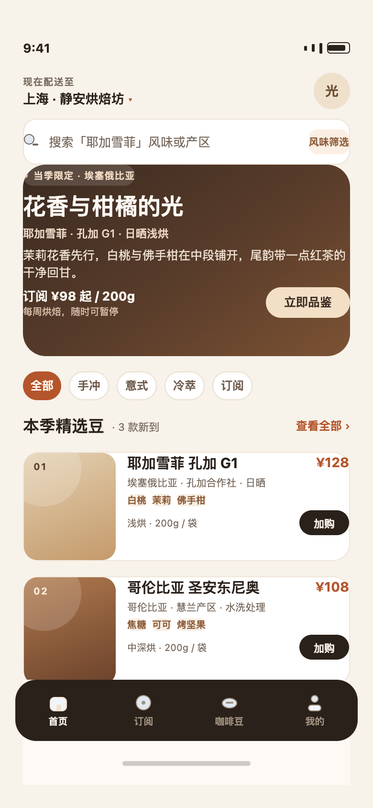
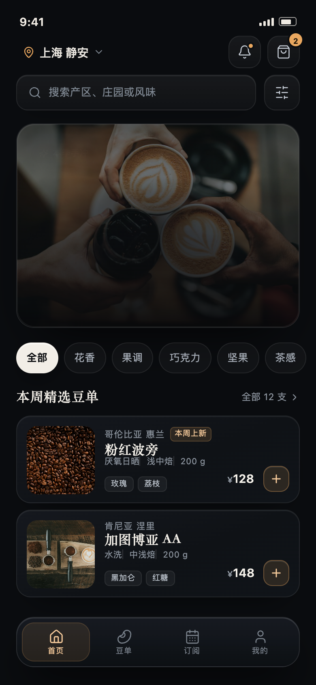
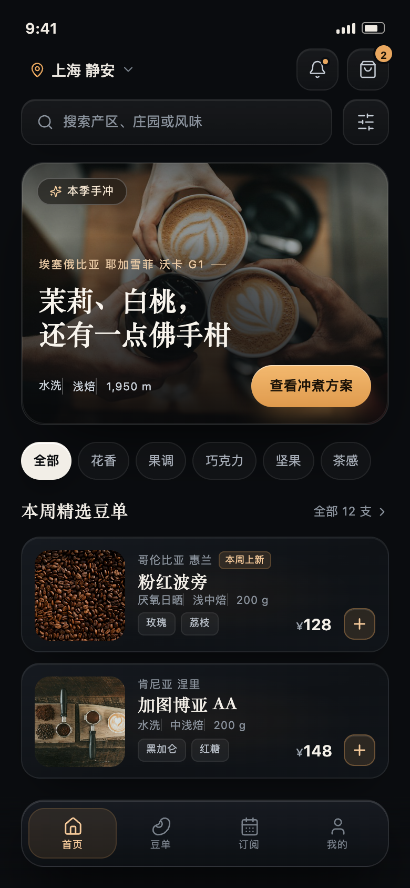
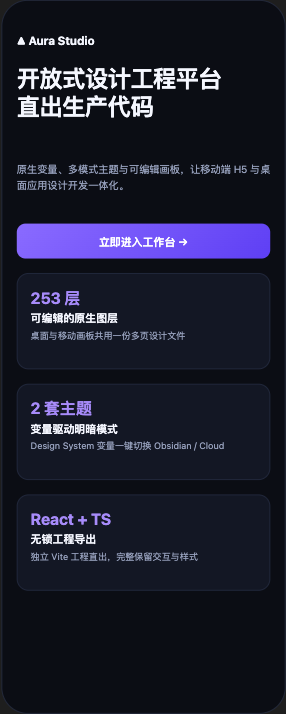
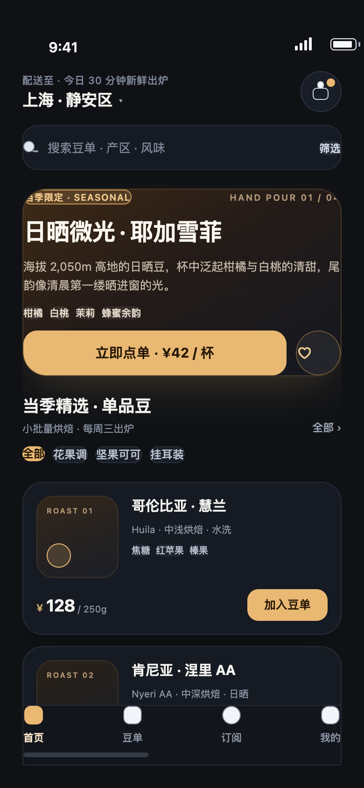
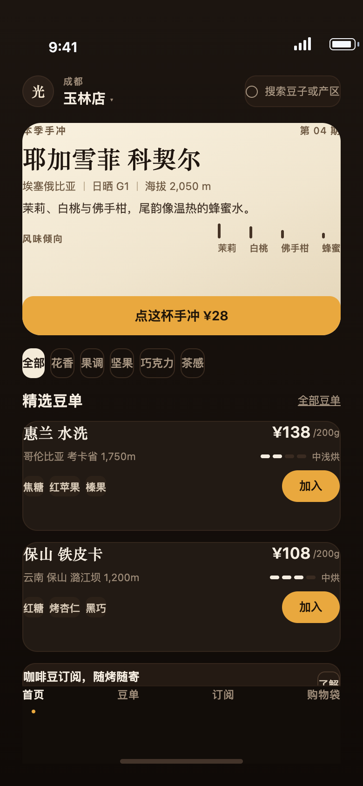
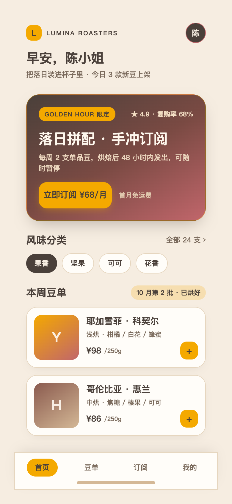
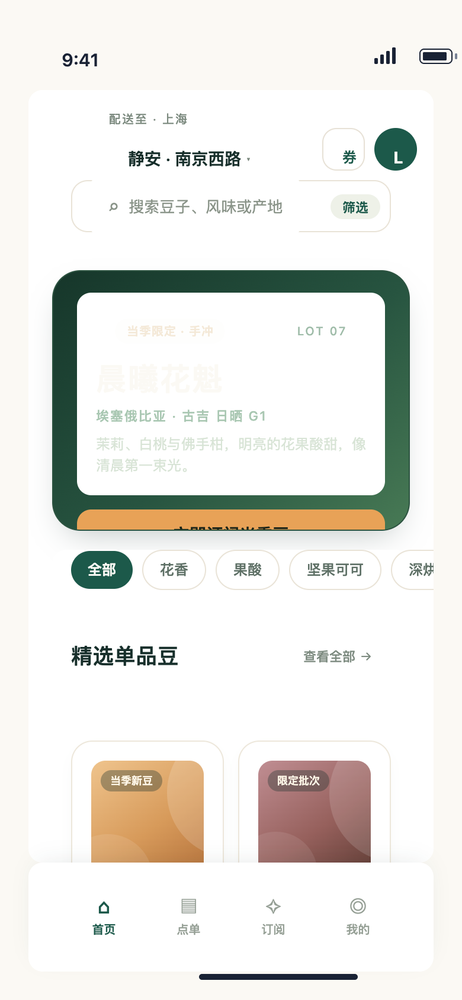
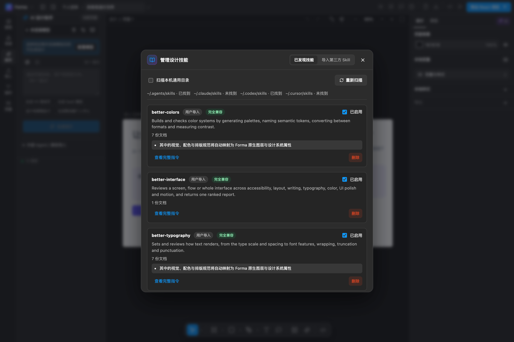
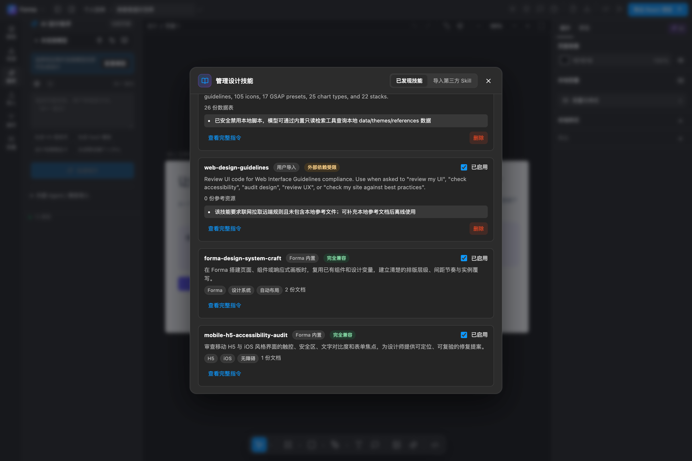

V1-A · 旧架构纯文本基线
(专有 JSON 盲画)
V1 旧架构
点击放大V2-A · 新架构纯文本
(HTML-First + 摄影 + Lucide + 自审)
V2 纯文本质变 点击放大
点击放大
V1-D · 旧架构最佳方案
(参考图 + 社区 Skill 旧蓝图)
V1 最佳 点击放大
点击放大
V2-B 初稿 · 视觉自审前
(入场动画导致主视觉文案隐身)
自审前初稿
点击放大V2-B 终稿 · 截屏视觉自审后
(参考图 + 社区 Skill + HTML-First)
✨ V2 旗舰成品
点击放大视觉参考图（B / D 输入）
Aura Mobile H5
参考输入

点击放大A · 纯文本基线（无参考图 / 无 Skill）
点击放大
B · 参考图 + 文本（多模态识图 / 无 Skill）

点击放大C · 纯文本 + 开源社区设计 Skill（frontend-design + ui-ux-pro-max + better-colors）
离线查 CSV ×4
点击放大D · 参考图 + 文本 + 社区设计 Skill + Forma 设计系统技能
综合最佳
点击放大
E · 社区 theme-factory 主题定向迁移（Golden Hour）
一次成型 · 100%
点击放大修复前 · A 组（纯文本基线）
修复前
点击放大修复后 · A 组（新编译器）
修复后
点击放大
修复前 · B 组（参考图 + 文本）
修复前 点击放大
点击放大
修复后 · B 组（新编译器）
修复后
点击放大
Forma「管理设计技能」弹窗 · 三级兼容徽章实拍（上）
Chromium 实拍
点击放大Forma「管理设计技能」弹窗 · 检索适配与受限提示（下）
Chromium 实拍
点击放大| 开源仓库 | Skill 名称 | 本地配套资源形态 | 改造前 | 改造后 | Forma 兼容分级 | 实测验证说明 |
|---|---|---|---|---|---|---|
jakubkrehel/skills |
better-colors | color-formats.md color-usage.md contrast.md 等 7 份 |
0 / 7 | 7 / 7 | 完全兼容 | 其中的视觉、配色与排版规范将自动映射为 Forma 原生图层与设计系统属性 |
jakubkrehel/skills |
better-interface | review-format.md |
0 / 1 | 1 / 1 | 完全兼容 | 直接索引并可按需激活读取 |
jakubkrehel/skills |
better-typography | choosing-fonts.md css-cheat-sheet.md details-and-accessibility.md 等 7 份 |
0 / 7 | 7 / 7 | 完全兼容 | 其中的视觉、配色与排版规范将自动映射为 Forma 原生图层与设计系统属性 |
anthropics/skills |
brand-guidelines | 纯 SKILL.md 指令 | 0 / 0 | 0 / 0 | 完全兼容 | 直接索引并可按需激活读取 |
jakubkrehel/skills |
build-design | figma.md |
0 / 1 | 1 / 1 | 完全兼容 | 直接索引并可按需激活读取 |
anthropics/skills |
frontend-design | 纯 SKILL.md 指令 | 0 / 0 | 0 / 0 | 完全兼容 | 其中的视觉、配色与排版规范将自动映射为 Forma 原生图层与设计系统属性 |
anthropics/skills |
theme-factory | themes/arctic-frost.md themes/botanical-garden.md themes/desert-rose.md 等 10 份 |
0 / 10 | 10 / 10 | 完全兼容 | 直接索引并可按需激活读取 |
nextlevelbuilder/ui-ux-pro-max-skill |
ui-ux-pro-max | data/app-interface.csv data/catalog-summary.json data/charts.csv 等 26 份 |
0 / 26 | 26 / 26 | 本地检索适配 | 已安全禁用本地脚本，模型可通过内置只读检索工具查询本地 data/themes/references 数据 |
vercel-labs/agent-skills |
web-design-guidelines | 纯 SKILL.md 指令 | 0 / 0 | 0 / 0 | 外部依赖受限 | 该技能要求联网拉取远端规则且未包含本地参考文件；可补充本地参考文档后离线使用 |